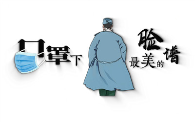

新华网南昌2月23日电（王凯丰）“谢谢你，徐婧，谢谢你们，江西医疗队……”2月21日，在武汉华中科技大学同济医学院附属协和肿瘤中心的病房里，已逾花甲的三名患者联名写下了一封感谢信，向照顾他们的南昌大学第二附属医院的医护人员们表示感谢。
信中提到的徐婧是南昌大学第二附属医院妇儿科的一名护士。她的细心护理让三名患者感受到了女儿般的贴心。“这些阿姨和我妈妈年纪差不多大，她们远离家人朋友，被隔离在医院治疗，而这时，我们就是她们的家人，我就是她们的女儿。”徐婧说。
图为已逾花甲的三名出院患者联名写下的感谢信。新华网发
信件全文如下：
非常的感激
我们是03病室的病友，我们自从2月15日来到医院接受治疗，受到了南昌医疗队的医生护士的精心护理。在这里，我们感受到了家里的温暖，我们是一群65岁以上的老人，不管我们的心情如何不好，你们都是充满耐心地为我们解答，为每个病人制定各种不同的治疗方针，让我们的身体和心理得到了极大的安慰。
让我们特别感动的是一位大眼睛、美得像天使一样的护士。每次她当班，就会特别地细心。当我们低血糖时，她会送来饼干；当我们没有生活用品想请她代购时，她会按每位的需求写在纸上，一一为我们解决；当我们的药品不足时，她会及时记录下来，让医生及时解决。今天，我们看到她隔离服上写着她的名字——徐婧。她让我们感受到来自女儿般的温暖。谢谢你，徐婧，谢谢你们，江西医疗队。
我们相信，在你们的精心治疗下，我们一定会康复出院的。也请你们一定要好好保护自己，注意安全，因为你们是最美的天使，是最伟大的人。
03病室 31床 樊某某 32床 刘某某 33床 陆某某
2020.2.21

- 方舱的一天方舱,武汉,新冠肺炎,1天前
- 泪目！这场战“疫”中的“感动瞬间”疫情,感动2天前
- 口罩下最美的脸谱3天前
- 一笔一划为战“疫”加油妈妈,深圳市,龙岗区,加油,海报,征集,孩子,雅文,同期,护士3天前
- 心疼！护士下班“出舱”累到蹲地上站不起来医护人员,医院,工作,汪凡,云南省,会展中心,国际,穿戴,开展,设备5天前
- 护士长：除夕“回娘家” 至今却未见妈妈医院,医疗队,湖北,工作,武汉,护士长5天前
- 我们肩并肩《执手风雨》6天前
加载更多